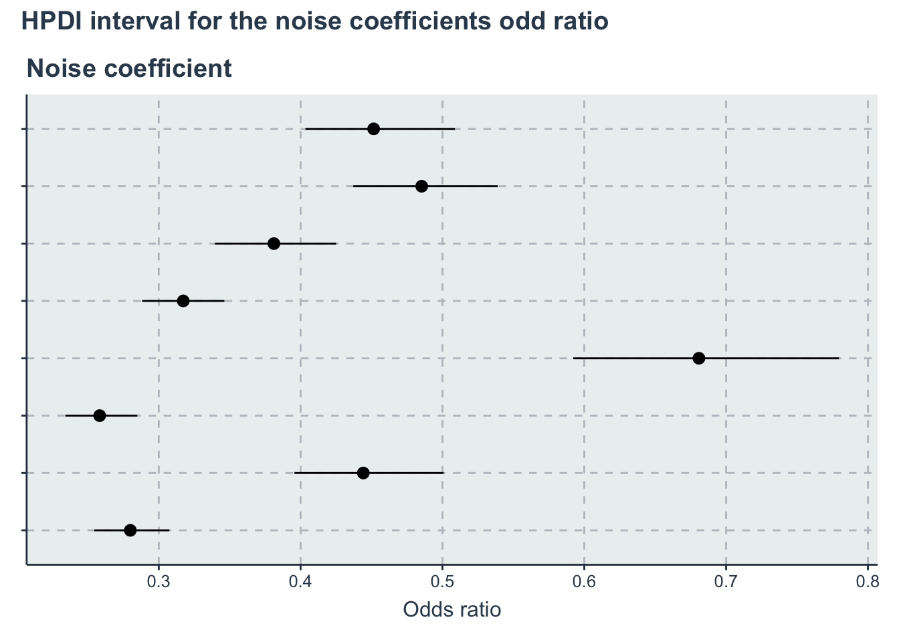

Chapter 3 Probability of success model
Our first model can be used to address problems such as:
RQ1 What is the probability of each solving a problem at precision \(\epsilon=0.1\)?
RQ2 What is the impact of noise in the probability of success of each algorithm?
3.1 Data preparation
We start importing the dataset
Let’s select only the columns that interests us. Note that some of the columns have "" because of the “-” in the column name
dataset <- select(dataset, Algorithm, CostFunction, SD, MaxFevalPerDimensions, simNumber, SolveAt1,
"SolveAt1e-1", "SolveAt1e-3", "SolveAt1e-6", OptimizationSuccessful)Let’s do some basic transformation
1 - We select only the cases where the optimization completed
2 - We convert True to 1 and 0 to false
3 - We group by the algorithms, functions, SD, and budget so we can summarize and create aggregated data
4 - We create an index of each algorithm and the cost functions. This is basically creating a map of NelderMead=1, PSO=2 etc… This makes things easier to work in Stan. For that we use the function create_index from the utils.R file
5 - We drop the columns we wont use
6 - Get an array with the names of the benchmark functions and the algorithms (to create nicer plots later with lengend)
Since we are only looking at 1e-1 for the precision we comment the other lines
d <- dataset %>% dplyr::filter(OptimizationSuccessful == TRUE) %>% dplyr::mutate(solvedAt1e1 = as.integer(dataset$"SolveAt1e-1"),
budget = MaxFevalPerDimensions) %>% dplyr::group_by(Algorithm, CostFunction, SD, budget) %>%
dplyr::summarize(solvedAt1e1 = sum(solvedAt1e1), N = n()) %>% dplyr::ungroup() %>% dplyr::mutate(AlgorithmID = create_index(Algorithm),
CostFunctionID = create_index(CostFunction)) %>% dplyr::select(Algorithm, AlgorithmID, CostFunction,
CostFunctionID, SD, budget, N, y = solvedAt1e1, )
# List of algorithms
bm <- get_index_names_as_array(d$CostFunction)
algorithms <- get_index_names_as_array(d$Algorithm)Lets preview a sample of the data set
kable(dplyr::sample_n(d, size = 10), "html", booktabs = T, format.args = list(scientific = FALSE),
digits = 3) %>% kable_styling(bootstrap_options = c("striped", "hover", "condensed"))| Algorithm | AlgorithmID | CostFunction | CostFunctionID | SD | budget | N | y |
|---|---|---|---|---|---|---|---|
| RandomSearch1 | 6 | Damavandi | 5 | 0 | 20 | 10 | 0 |
| NelderMead | 4 | Schwefel2d26N6 | 19 | 3 | 100000 | 10 | 0 |
| RandomSearch1 | 6 | RosenbrockRotatedN6 | 14 | 0 | 100000 | 10 | 0 |
| PSO | 5 | Schwefel2d4N6 | 20 | 0 | 10000 | 10 | 4 |
| NelderMead | 4 | SalomonN2 | 15 | 3 | 20 | 10 | 0 |
| RandomSearch2 | 7 | Trefethen | 25 | 0 | 20 | 10 | 0 |
| RandomSearch2 | 7 | XinSheYang2N2 | 29 | 3 | 100 | 10 | 0 |
| RandomSearch2 | 7 | PinterN6 | 11 | 0 | 100 | 10 | 0 |
| RandomSearch1 | 6 | ThreeHumpCamelBack | 24 | 0 | 100 | 10 | 7 |
| CMAES | 1 | Schwefel2d21N6 | 17 | 0 | 100000 | 10 | 10 |
3.2 Stan model
The Stan model is specified in the file: './stanmodels/probsuccess.stan'
// Probability of success model
// Author: David Issa Mattos
// Date: 16 June 2020
//
//
data {
int <lower=1> N_total; // Sample size
int y[N_total]; // Result of the binomial
int N_draw[N_total]; // Number of draws in the binomial
real x_noise[N_total];//predictor for noise
//To model each algorithm independently
int <lower=1> N_algorithm; // Number of algorithms
int algorithm_id[N_total]; //vector that has the id of each algorithm
//To model the influence of each benchmark
int <lower=1> N_bm;
int bm_id[N_total];
}
parameters {
//Fixed effect
real a_alg[N_algorithm];//the mean effect given by the algorithms
real b_noise[N_algorithm];//slope for the noise
// //Random effect. The effect of the benchmarks
real a_bm_norm[N_bm];//the mean effect given by the base class type
real<lower=0> s;//std for the random effects
}
model {
real p[N_total];
//Fixed effect
a_alg ~ normal(0,1);
b_noise ~ normal(0,1);
// //Random effects
s ~ exponential(1);
a_bm_norm ~ normal(0,1);
for (i in 1:N_total)
{
p[i] = a_alg[algorithm_id[i]]+ a_bm_norm[bm_id[i]]*s + b_noise[algorithm_id[i]] * x_noise[i];
}
//Equivalent to: y~binomial(N, inverse_logit(a+bx=alpha))
y ~ binomial_logit(N_draw,p);
}Let’s compile and start sampling with the Stan function. In the data folder you can find the specific data used to fit the model after all transformations "./data/probsuccsess-data.RDS"
standata <- list(N_total = nrow(d), y = d$y, N_draw = d$N, x_noise = d$SD, N_algorithm = length(algorithms),
algorithm_id = d$AlgorithmID, N_bm = length(bm), bm_id = d$CostFunctionID)
saveRDS(standata, file = "./data/probsuccsess-data.RDS")For computation time sake we are not running this chunk every time we compile this document. From now on we will load from the saved Stan fit object. However, when we change our model or the data we can just run this chunk separately
3.3 Diagnosis
The first step is to evaluate the convergence of the chains. We will look now only for the slopes, algorithms intercept and the standard deviation of the random effects
a_alg <- c("a_alg[1]", "a_alg[2]", "a_alg[3]", "a_alg[4]", "a_alg[5]", "a_alg[6]", "a_alg[7]",
"a_alg[8]")
b_noise <- c("b_noise[1]", "b_noise[2]", "b_noise[3]", "b_noise[4]", "b_noise[5]", "b_noise[6]",
"b_noise[7]", "b_noise[8]")
rstan::traceplot(probsuccess.fit, pars = a_alg)
Another diagnosis is to look at the Rhat. If Rhat is greater than 1.01 it indicates a divergence in the chains (they did not mix well). The table below shows a summary of the sampling.
kable(summary(probsuccess.fit)$summary) %>% kable_styling(bootstrap_options = c("striped", "hover",
"condensed"))| mean | se_mean | sd | 2.5% | 25% | 50% | 75% | 97.5% | n_eff | Rhat | |
|---|---|---|---|---|---|---|---|---|---|---|
| a_alg[1] | 0.9946071 | 0.0148192 | 0.3290572 | 0.3618872 | 0.7721788 | 0.9866326 | 1.2147485 | 1.6573538 | 493.0550 | 1.0036977 |
| a_alg[2] | -1.4321112 | 0.0148480 | 0.3340389 | -2.0771512 | -1.6564318 | -1.4395342 | -1.2113320 | -0.7558657 | 506.1224 | 1.0034682 |
| a_alg[3] | 0.8838772 | 0.0147919 | 0.3291742 | 0.2551902 | 0.6568310 | 0.8759522 | 1.1036079 | 1.5423992 | 495.2249 | 1.0033757 |
| a_alg[4] | -3.1850027 | 0.0145669 | 0.3454132 | -3.8454788 | -3.4179437 | -3.1915344 | -2.9594851 | -2.4831115 | 562.2713 | 1.0028309 |
| a_alg[5] | 0.7028661 | 0.0149930 | 0.3305516 | 0.0671596 | 0.4751224 | 0.6970125 | 0.9255912 | 1.3781179 | 486.0700 | 1.0036165 |
| a_alg[6] | -1.4422315 | 0.0148736 | 0.3342055 | -2.0748216 | -1.6725905 | -1.4474044 | -1.2200929 | -0.7810854 | 504.8892 | 1.0030701 |
| a_alg[7] | -0.8948662 | 0.0147322 | 0.3306491 | -1.5328720 | -1.1188970 | -0.9022392 | -0.6729730 | -0.2203865 | 503.7352 | 1.0030168 |
| a_alg[8] | -1.1009767 | 0.0147796 | 0.3326966 | -1.7430722 | -1.3272842 | -1.1045184 | -0.8799628 | -0.4279465 | 506.7227 | 1.0034475 |
| b_noise[1] | -1.2633976 | 0.0005300 | 0.0459951 | -1.3541275 | -1.2943863 | -1.2629590 | -1.2316701 | -1.1753833 | 7530.4952 | 0.9997559 |
| b_noise[2] | -0.8099152 | 0.0007618 | 0.0596258 | -0.9301217 | -0.8503491 | -0.8098407 | -0.7689690 | -0.6947710 | 6126.8076 | 0.9998526 |
| b_noise[3] | -1.3428084 | 0.0006179 | 0.0504481 | -1.4425540 | -1.3763821 | -1.3417232 | -1.3093450 | -1.2463675 | 6665.2114 | 1.0005741 |
| b_noise[4] | -0.3988165 | 0.0008430 | 0.0713629 | -0.5403377 | -0.4468691 | -0.3988481 | -0.3495032 | -0.2631669 | 7165.6523 | 0.9996902 |
| b_noise[5] | -1.1391536 | 0.0005661 | 0.0468626 | -1.2323387 | -1.1698545 | -1.1391343 | -1.1064296 | -1.0489285 | 6851.9886 | 1.0001047 |
| b_noise[6] | -0.7920796 | 0.0007000 | 0.0585343 | -0.9083656 | -0.8306712 | -0.7911704 | -0.7529028 | -0.6788131 | 6992.1559 | 0.9996895 |
| b_noise[7] | -0.9597663 | 0.0006727 | 0.0565742 | -1.0723302 | -0.9982250 | -0.9584665 | -0.9211403 | -0.8522974 | 7072.0237 | 0.9998860 |
| b_noise[8] | -0.7202239 | 0.0005731 | 0.0512429 | -0.8212971 | -0.7539867 | -0.7204663 | -0.6863093 | -0.6199107 | 7995.2269 | 1.0000129 |
| a_bm_norm[1] | -0.9527650 | 0.0058266 | 0.1640450 | -1.2986550 | -1.0574763 | -0.9449164 | -0.8405614 | -0.6556160 | 792.6796 | 1.0007526 |
| a_bm_norm[2] | -1.7380809 | 0.0092187 | 0.2825468 | -2.3365043 | -1.9177435 | -1.7267402 | -1.5394417 | -1.2274041 | 939.3784 | 1.0007376 |
| a_bm_norm[3] | -1.0105804 | 0.0059796 | 0.1701593 | -1.3624826 | -1.1232509 | -1.0009202 | -0.8910774 | -0.6980189 | 809.7860 | 1.0007038 |
| a_bm_norm[4] | 0.2285718 | 0.0071118 | 0.1511781 | -0.0474446 | 0.1236682 | 0.2220277 | 0.3239097 | 0.5546319 | 451.8765 | 1.0052771 |
| a_bm_norm[5] | -1.2979137 | 0.0071315 | 0.2068445 | -1.7327485 | -1.4332758 | -1.2871085 | -1.1531152 | -0.9203510 | 841.2615 | 1.0010337 |
| a_bm_norm[6] | -0.5507772 | 0.0051477 | 0.1329175 | -0.8274771 | -0.6393456 | -0.5449455 | -0.4606890 | -0.2952643 | 666.7008 | 1.0006213 |
| a_bm_norm[7] | 1.5473018 | 0.0145426 | 0.3063036 | 0.9970505 | 1.3284599 | 1.5297401 | 1.7409851 | 2.2044622 | 443.6269 | 1.0066939 |
| a_bm_norm[8] | 0.9056046 | 0.0106608 | 0.2225983 | 0.5103041 | 0.7481791 | 0.8917652 | 1.0480799 | 1.3821662 | 435.9790 | 1.0067902 |
| a_bm_norm[9] | -2.5626916 | 0.0098359 | 0.4670434 | -3.5955508 | -2.8496381 | -2.5244053 | -2.2364610 | -1.7583805 | 2254.6803 | 1.0004011 |
| a_bm_norm[10] | -0.3950607 | 0.0051346 | 0.1278234 | -0.6601937 | -0.4780462 | -0.3914228 | -0.3109385 | -0.1480920 | 619.7451 | 1.0014863 |
| a_bm_norm[11] | -0.8740592 | 0.0055704 | 0.1554762 | -1.1997542 | -0.9759484 | -0.8679696 | -0.7659328 | -0.5848577 | 779.0311 | 1.0001963 |
| a_bm_norm[12] | 0.4838904 | 0.0083772 | 0.1750863 | 0.1753386 | 0.3569926 | 0.4736147 | 0.5964012 | 0.8564897 | 436.8238 | 1.0064032 |
| a_bm_norm[13] | -0.3262289 | 0.0052969 | 0.1280675 | -0.5837855 | -0.4113456 | -0.3231585 | -0.2420871 | -0.0702349 | 584.5571 | 1.0013819 |
| a_bm_norm[14] | -0.8278555 | 0.0055364 | 0.1519790 | -1.1457247 | -0.9256599 | -0.8196604 | -0.7241520 | -0.5501589 | 753.5365 | 1.0001462 |
| a_bm_norm[15] | -0.6318079 | 0.0050920 | 0.1383457 | -0.9195265 | -0.7194981 | -0.6271263 | -0.5391648 | -0.3673415 | 738.1523 | 1.0002242 |
| a_bm_norm[16] | -0.3773009 | 0.0051681 | 0.1279449 | -0.6353464 | -0.4607384 | -0.3736860 | -0.2931876 | -0.1271949 | 612.9012 | 1.0015522 |
| a_bm_norm[17] | -0.5210612 | 0.0052287 | 0.1336631 | -0.7950268 | -0.6089748 | -0.5165403 | -0.4308585 | -0.2673398 | 653.4800 | 1.0008857 |
| a_bm_norm[18] | -0.0956786 | 0.0058456 | 0.1323205 | -0.3513172 | -0.1820726 | -0.0995839 | -0.0109864 | 0.1746857 | 512.3876 | 1.0034467 |
| a_bm_norm[19] | -1.7358133 | 0.0093561 | 0.2823701 | -2.3252919 | -1.9162240 | -1.7227131 | -1.5343894 | -1.2305982 | 910.8451 | 1.0014322 |
| a_bm_norm[20] | -0.6333188 | 0.0052434 | 0.1368810 | -0.9181768 | -0.7203772 | -0.6283925 | -0.5403273 | -0.3761509 | 681.4834 | 1.0003449 |
| a_bm_norm[21] | -0.3957515 | 0.0052231 | 0.1284832 | -0.6575543 | -0.4778521 | -0.3929083 | -0.3111569 | -0.1480475 | 605.1188 | 1.0012406 |
| a_bm_norm[22] | -0.0292625 | 0.0060526 | 0.1344119 | -0.2860116 | -0.1204862 | -0.0327993 | 0.0576141 | 0.2439762 | 493.1711 | 1.0033417 |
| a_bm_norm[23] | -0.6411656 | 0.0051955 | 0.1380644 | -0.9247816 | -0.7307958 | -0.6353042 | -0.5463581 | -0.3839083 | 706.1671 | 1.0002261 |
| a_bm_norm[24] | 0.4336104 | 0.0081215 | 0.1702392 | 0.1342273 | 0.3126054 | 0.4207068 | 0.5429854 | 0.8043065 | 439.3813 | 1.0059156 |
| a_bm_norm[25] | -0.8869217 | 0.0057197 | 0.1574404 | -1.2162575 | -0.9882524 | -0.8796199 | -0.7783999 | -0.6002996 | 757.6807 | 1.0002479 |
| a_bm_norm[26] | 1.2805502 | 0.0128771 | 0.2704397 | 0.7980406 | 1.0887761 | 1.2651200 | 1.4519296 | 1.8662452 | 441.0660 | 1.0069973 |
| a_bm_norm[27] | -0.8046715 | 0.0054749 | 0.1504996 | -1.1256752 | -0.9031270 | -0.7973055 | -0.7013677 | -0.5251334 | 755.6355 | 1.0001749 |
| a_bm_norm[28] | -1.9196463 | 0.0103139 | 0.3206570 | -2.6137884 | -2.1209950 | -1.8987504 | -1.6968301 | -1.3506281 | 966.5842 | 1.0008691 |
| a_bm_norm[29] | 0.0145819 | 0.0061994 | 0.1365363 | -0.2396681 | -0.0764639 | 0.0072865 | 0.1033810 | 0.2964588 | 485.0618 | 1.0038566 |
| a_bm_norm[30] | 0.3032353 | 0.0073839 | 0.1574109 | 0.0243495 | 0.1901417 | 0.2937836 | 0.4037032 | 0.6397283 | 454.4676 | 1.0054226 |
| s | 2.5722159 | 0.0166277 | 0.3933513 | 1.9291118 | 2.2970962 | 2.5255790 | 2.8119336 | 3.4566604 | 559.6244 | 1.0044481 |
| lp__ | -5616.6387287 | 0.2391257 | 6.3573450 | -5630.2796222 | -5620.6002220 | -5616.1926901 | -5612.2277348 | -5605.2607227 | 706.8042 | 1.0037792 |
3.4 Results and Plots
First lets get the HPDI of every parameter.
Then we restrict to the algorithms, them to the slopes, then to the
hpdi <- get_HPDI_from_stanfit(probsuccess.fit)
hpdi_oddsratio <- hpdi
hpdi_oddsratio$Mean <- exp(hpdi$Mean)
hpdi_oddsratio$HPDI.lower <- exp(hpdi$HPDI.lower)
hpdi_oddsratio$HPDI.higher <- exp(hpdi$HPDI.higher)
hpdi_oddsratio_algorithm <- hpdi_oddsratio %>% dplyr::filter(str_detect(Parameter, "a_alg\\[")) %>%
dplyr::mutate(Parameter = algorithms) #Changing to the algorithms labels
hpdi_oddsratio_b_noise <- hpdi_oddsratio %>% dplyr::filter(str_detect(Parameter, "b_noise\\[")) %>%
dplyr::mutate(Parameter = algorithms) #Changing to the algorithms labels
hpdi_s <- hpdi %>% dplyr::filter(Parameter == "s")
p_alg <- ggplot(data = hpdi_oddsratio_algorithm, aes(x = Parameter)) + geom_pointrange(aes(ymin = HPDI.lower,
ymax = HPDI.higher, y = Mean)) + labs(title = "Algorithm intercept", y = "Odds ratio", x = "Algorithm") +
coord_flip()
p_alg + plot_annotation(title = "HPDI interval for the algorithms odd ratio")p_noise <- ggplot(data = hpdi_oddsratio_b_noise, aes(x = Parameter)) + geom_pointrange(aes(ymin = HPDI.lower,
ymax = HPDI.higher, y = Mean)) + labs(title = "Noise coefficient", y = "Odds ratio", x = "") +
coord_flip() + theme(axis.text.y = element_blank())
p_noise + plot_annotation(title = "HPDI interval for the noise coefficients odd ratio")